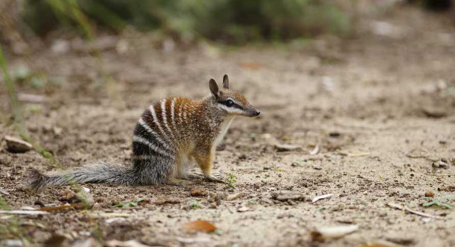
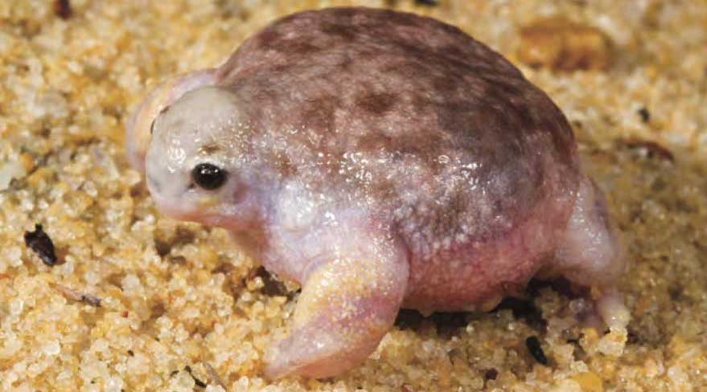
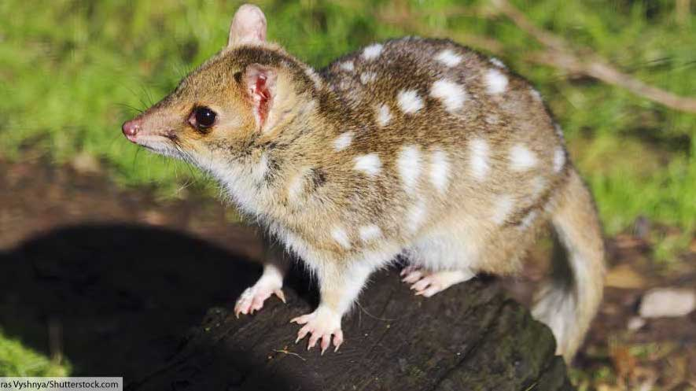
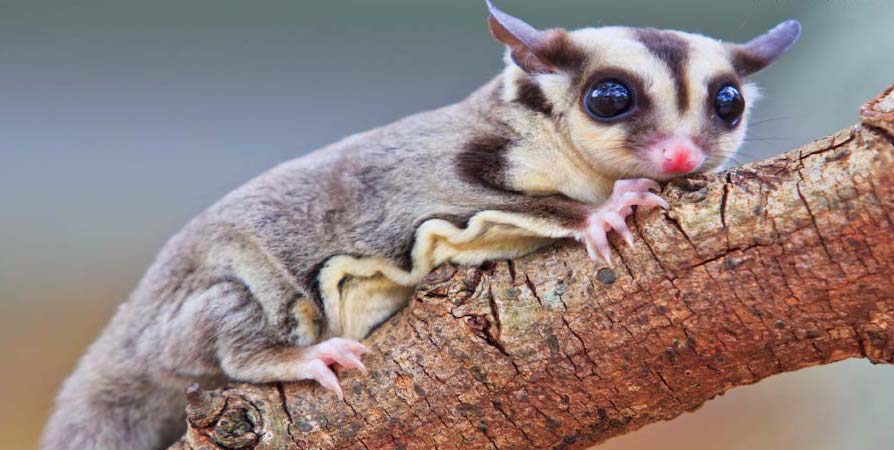

ANIMAL WEIRD
Welcome to Animal Weird - See the animals in Australia!

Numbat
- Scientific Name: Myrmecobius fasciatus
- Conservation Status: Endangered
- The numbat is a small marsupial with an appearance somewhere between a cat and a rat. It has a pointed face, a long, bushy tail, and a series of distinctive white stripes running along its back.
- TNumbats use their pointed muzzles to forage in the dirt for termites, which they scoop up with their long tongues.
- The numbat has a number of natural predators, but it was the introduction of the red fox by settlers that led to the species becoming endangered.
- Today, only around 800 of this once widespread animal are left in the wild.

Turtle Frog/Tortoise Frog
- Scientific Name: Myobatrachus gouldii
- Conservation Status: Least Concern
- The turtle frog (also known as a tortoise frog) is a small frog found in the southwestern corner of Western Australia. It lives in semi-arid areas, and has powerful limbs for burrowing in the sandy soil.
- The species gets its name from its turtle-like appearance. It has a round, flat body and resembles a turtle without a shell.
- The turtle frog is unusual among frogs because it skips the tadpole stage of its development, instead hatching from its egg as a small frog.

Quoll
- Scientific Name: Marsupials in the genus Dasyurus
- Conservation Status: Near Threatened
- Quolls are small to mid-sized, nocturnal, carnivorous marsupials. There are six species of quoll, four of which–the western, eastern, northern and tiger quoll– are found in Australia.
- Quolls have brown or black coats marked with distinctive pale spots. They prey on small mammals, reptiles and birds.
- Like many of Australia’s native animals, quolls suffered greatly with the introduction of non-native predators such as the red fox and domestic cat.
- One of the main threats to quolls comes in the form of another non-native animal: the cane toad. Although not predatory, the cane toad is poisonous. Native Australian animals that prey on the amphibian are likely to become ill or die.

Sugar-Glider
- Scientific Name: Petaurus breviceps
- Conservation Status: Least Concern
- The sugar glider is a gliding possum found not only in Australia, but also on New Guinea and some Indonesian islands.
- This small, nocturnal marsupial is equipped with flaps of skin between its arms and legs. These act as wings, allowing the sugar glider to glide from tree to tree.
- The omnivorous sugar glider eats insects, leaves and eucalyptus sap. This opportunist hunter may also eat small reptiles and birds when the chance arises.